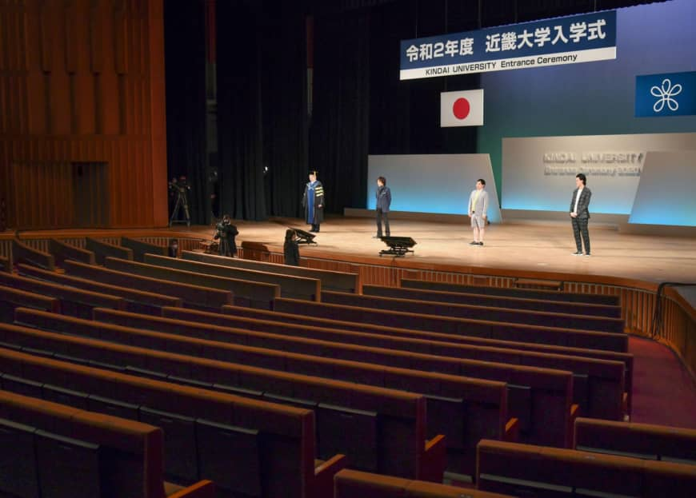

Annamaria, a 27-year-old Slovakian student of environmental engineering at one of Japan’s top universities, worries she may not be able to submit her thesis before the deadline if she doesn’t return to Japan by September. When she left Japan on March 3 to visit her family during her spring break, Slovakia had no reported COVID-19 infections and Japan had not yet seen a major coronavirus outbreak, either.
What stops her from traveling back to Tokyo is a strict coronavirus-induced entry ban Japan has imposed on travelers from 111 countries and regions, which applies to all foreign residents with valid student visas.
The restriction, which has been met with strong criticism from Japan’s international community, has left many international students stranded abroad, in financial limbo and in fear of an uncertain future.
The measure targeting only foreign nationals, which was introduced to curb the spread of the coronavirus on April 3 and subsequently updated through May 27, poses a challenge for colleges and universities with high acceptance rates of international students, and they are at risk of losing student admissions once the coronavirus subsides.
In the Slovakian’s case, a second-year student in Tokyo’s Ochanomizu University’s master’s program who was considering pursuing a doctoral degree in Japan, a leave of absence from school could jeopardize her plans. She worries the duration of her scholarship may not be renewed for the two-year-period required for graduation. She also worries that if she misses her deadline for submitting her thesis, she may need to return the full scholarship grant to her sponsor. The woman requested not to use her last name due to privacy concerns.
“I never would have imagined (students) could be treated like this … international students and researchers are put in the same category as tourists,” she lamented.
Students overlooked
The ban has left several dozen undergraduate and graduate students at one of the country’s most elite private universities, Keio University in Tokyo, unable to return to Japan and forced 20 other students to take a leave of absence. The university’s records for May also indicate a loss of some 230 nonregular students compared with figures in previous years.
Annamaria poses in front of Tokyo’s Ochanomizu University after completing her undergraduate program. Travel restrictions have left Annamaria, a graduate student who traveled to Slovakia in March to visit her family, unable to return to continue her research. | COURTESY OF ANNAMARIA
Annamaria poses in front of Tokyo’s Ochanomizu University after completing her undergraduate program. Travel restrictions have left Annamaria, a graduate student who traveled to Slovakia in March to visit her family, unable to return to continue her research. | COURTESY OF ANNAMARIA
Immigration authorities have said they are allowing in some foreign nationals who left before the imposition of the entry ban. In theory, foreign nationals who left before the country they were visiting was put on Japan’s re-entry ban list may be exempted from the restriction if they left the country on humanitarian grounds, for instance to attend the funeral of a deceased relative, regardless of their visa status.
In practice, however, humanitarian grounds are not an option for students seeking such an exemption. According to the Immigration Services Agency, a student’s plea may be rejected. An official from the agency’s section overseeing re-entry procedures said that a wish to continue studies in Japan is not viewed as a circumstance of a humanitarian nature that would allow those stuck abroad amid the pandemic to return to their Japanese homes.
The central government has announced that international students will be allowed to return during the second stage of relaxed entry restrictions, following business travelers. The planned move is largely triggered by economic concerns, given that many students fill gaps in the tight labor market, and many convenience and other stores count on international students to beat labor shortages.
Prime Minister Shinzo Abe on Thursday announced the government’s plan to relax entry restrictions for people from four countries: Vietnam, Thailand, Australia and New Zealand. But he did not disclose any schedule for letting international students in.
Such an approach contradicts Tokyo’s eagerness in recent years to reach 300,000 foreign students by 2020, with the prospect of having them gain employment in Japan. The government reached its target last year with 345,791 international students enrolled as of December 2019.
Financial limbo
As the pandemic has unfolded, many students have been left in financial limbo.
Bangladeshi Meher Afroz, who is enrolled in the master’s degree program at the School of International and Public Policy at Tokyo’s Hitotsubashi University, left for her home country in February, not anticipating her stay would last for more than three months. The delayed return has cost her access to her scholarship grant sponsored by Japan’s education ministry.
Multiple private and public organizations stipulate in their regulations that any student leaving Japan for more than a month can be denied access to such financial assistance, regardless of the reason for their absence.
Currently stuck in Bangladesh without any source of income, Afroz is paying her rent and bills in Japan with her pocket money, struggling to follow her classes online while coping with the time difference and a poor internet connection. She hopes she will be able to return by September, when her student visa is set to expire.
She said she would like to request that “the honorable Government of Japan” take into consideration the situation of many students who, like Afroz, are unable to continue their studies from abroad. “Please give us special priority to come back in Japan as early as possible! I need to get back (to) my study environment there,” she said.
Afroz said she had come to Japan in pursuit of the dream that one day her degree will help her establish her own business or give her the chance to work with international organizations such as the Japan International Cooperation Agency, which coordinates activities aimed at economic development.
Many students from developing countries heavily depend on such financial aid, and receiving it is often the only way they can pursue higher education. Jigyan Thapa, a Nepalese who organizes and oversees international exchange events at the Kanagawa International Foundation, which provides assistance to international students, speculates that students from developing countries are hit hardest by the pandemic.
“In any crisis, either in a disaster or a pandemic like this one, students’ hardship is often swept under the rug, justified by claims they share the fate of Japanese nationals,” he said, stressing that the pandemic highlights shortcomings of the government’s handling of international students. “But in reality, there’s a huge gap between services and assistance they and their Japanese counterparts can receive.”
The government has announced it will give cash handouts of up to ¥200,000 to students struggling financially, but later set an additional criterion making only those whose grades were in the top 30 percent eligible.
“In the face of financial difficulties, every year a number of students end up taking their own lives, as they are unable to pay for tuition or even purchase a plane ticket to Nepal,” Thapa said, stressing that students bound by visa restrictions are unable to pursue opportunities elsewhere. “I think students are being cold-shouldered by the government, which could prove more supportive in such harsh conditions given that it’s Japan that sought to bring them in.”
Some public and private universities including the Tokyo University of Foreign Studies and Ritsumeikan Asia Pacific University have rolled out new support schemes to help students continue their studies. For instance, Gakushuin Women’s College has covered the cost of delivery of textbooks to students unable to return and has given handouts of ¥60,000 per person to help students acquire equipment to attend classes online. But not all universities offer such assistance and some students don’t qualify for it.
Miho Odagiri, an official at the education ministry’s office for student exchange, said that the ministry is aware of the financial struggles of international students. She confirmed that some students who have stopped attending classes may have had their financial grants temporarily suspended.
“We are trying to provide as much support as we can, and we know we’ll need to expand it more flexibly,” Odagiri said. She said that various government agencies and institutions are offering help with applying for exemptions or reductions in health insurance fees and that the government has requested electricity and gas companies wait for payments from students who are stuck abroad.
Post-pandemic challenges
The coronavirus pandemic and Japan’s response to it are becoming a headache for universities with high acceptance rates of foreign students.
“Most students who were slated for enrollment in April, as well as those students who left Japan for spring break, haven’t been able to come or return to Japan,” said Takeshi Murakami, general director of APU in Beppu, Oita Prefecture. APU, which is known for promoting diversity, has around 2,800 students from around 90 countries, who represent half of the total number, with a majority seeking degrees at the university.
Just like APU, Gakushuin Women’s College in Tokyo has been offering online courses for international students attending regular classes. But travel restrictions have delayed the admission of exchange students slated to join the university this spring until fall.
Some universities worry that the entry ban will affect admissions of students planning to enroll in courses starting in the fall.
“Around 70 percent of international students join the university in fall,” APU’s Murakami noted. “With the entry restriction, which covers nearly all countries our students come from, in place, those students may not be able to travel to Japan. I’m worried the current situation will affect the rate of students who will complete admission procedures.”
The time difference and the ongoing pandemic are expected to further pose challenges to the global appeal that educational institutions have long prided themselves on.
Yukiko Ito, professor at the Department of Intercultural Communication at Gakushuin Women’s College, said that the university is seeking new ways to offer more opportunities for students to better connect remotely with their peers and teachers.
“Attending classes is not the only way to gain academic experience, and university students can learn communication skills by joining student society committees and making friends,” she stressed.
Keio University professor Shinnosuke Obi, who serves as the vice president for international collaboration, believes the travel ban jeopardizes both Japanese and international students’ chances of gaining overseas experience.
“Such a travel restriction undermines the entire concept of overseas study programs. It affects our long-standing efforts to give students a chance to expand their knowledge and experience through participation in short-term training programs in other countries,” he said. “As long as the entry restriction remains in place, it will keep hindering admissions of international students, as online courses won’t compensate for a lack of exposure to Japanese culture or direct communication with Japanese students.”
A Bangladeshi woman, who requested not to use her name out of concern the disclosure could affect her scholarship, chose Japan for her studies at the expense of an already secured admission to a master’s course in her home country. Facing a likely delay in enrollment and a possible yearlong gap, she worries that Japan’s strict policy will jeopardize her future career.
After receiving an honors bachelor’s degree in biochemistry and molecular biology from University of Dhaka in February, the woman was set to leave for Japan to follow the path of the country’s Nobel laureates in the field. She secured a spot on a five-year integrated master’s and Ph.D. program with a scholarship sponsored by the education ministry. Her admission process took nearly one year and is now on hold as visa issuance has been suspended.
“Some of my friends are going to pursue their higher studies in other countries from September,” she said in an email. “I am now feeling stressed, thinking my decision to choose Japan was wrong!”
(This Artical Orginally Published by japantimes English edition on June 19th 2020, This article is credit from the Japan Times)